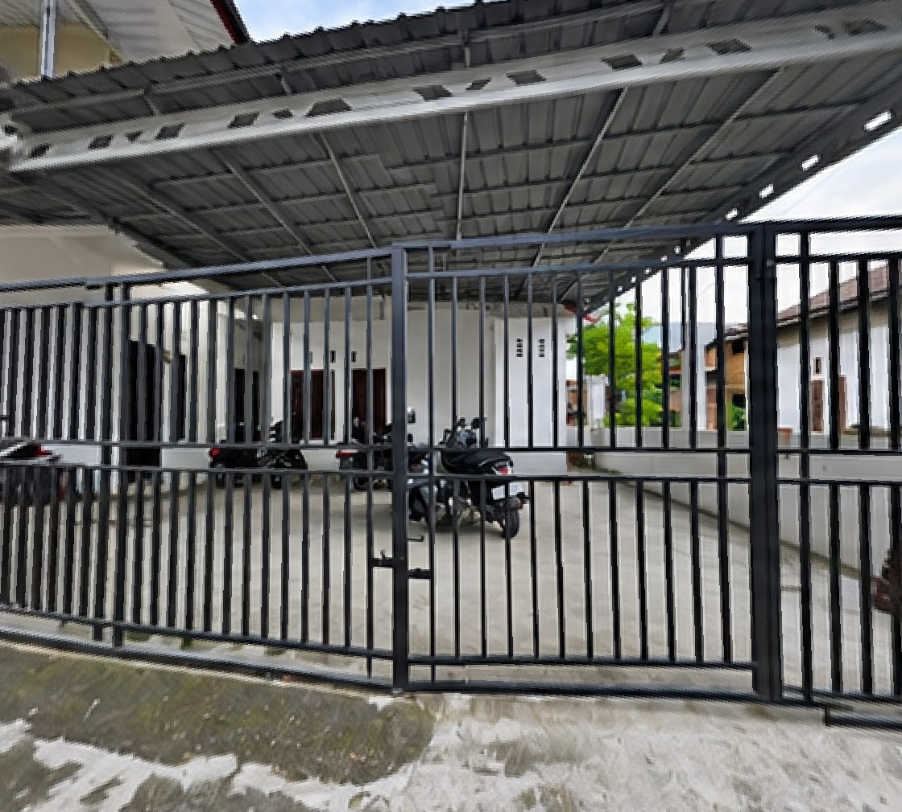

TUR VIRTUAL KOS
Lihat kosnya lebih dekat.
Dari gerbang hingga kamar, kenali suasana kos dua lantai ini sebelum datang langsung.
Mulai tur 360°
Tur virtual 360°
Geser untuk melihat sekeliling. Pilih tanda panah di dalam panorama untuk berpindah tempat.
- Area masuk
- Jalan, gerbang, dan parkir
- Lantai 1
- Kamar, lorong, dan tangga
- Lantai 2
- Kamar dan balkon